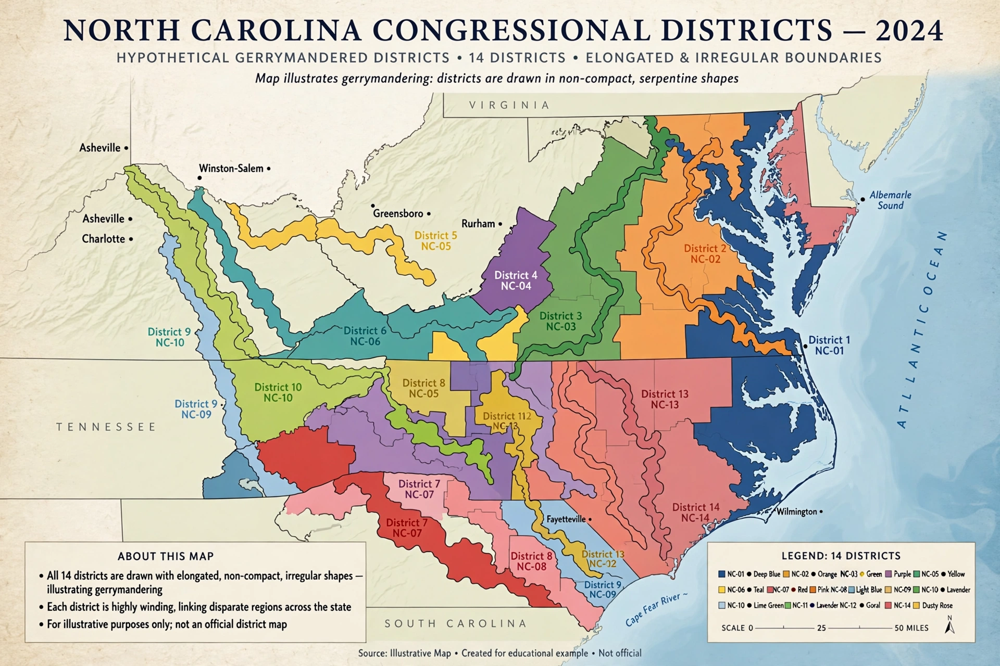

Rucho v. Common Cause
From Wikipedia, the free encyclopedia

Rucho v. Common Cause, 588 U.S. 684 (2019), is a landmark Supreme Court of the United States decision holding that claims of Partisan gerrymandering present nonjusticiable political questions beyond the reach of federal courts. By a 5–4 majority, the Court ended decades of attempts to find a judicial standard for policing maps drawn to entrench a party, leaving the issue to Congress, state courts and state constitutions.
Background
The consolidated cases arose from North Carolina's 2016 congressional map (drawn, its sponsor admitted, to elect 10 Republicans and 3 Democrats) and Maryland's map (redrawn by Democrats to flip a Republican seat). Lower courts struck both down as unconstitutional partisan gerrymanders under the First and Fourteenth Amendments. The Supreme Court had repeatedly approached the question — Davis v. Bandemer (1986), Vieth v. Jubelirer (2004), Gill v. Whitford (2018) — without settling on a manageable standard.
Decision
Chief Justice John Roberts's majority opinion held that partisan gerrymandering claims lack 'limited and precise standards that are clear, manageable, and politically neutral', and so belong to the political branches: Congress may legislate under the Elections Clause, and states may use commissions, ballot initiatives and state courts. Justice Elena Kagan's dissent, joined by three colleagues, warned that the decision let politicians entrench themselves against the people's will: 'Of all times to abandon the Court's duty to declare the law, this was not the one.'
Aftermath
The ruling shifted gerrymandering fights to state courts — Pennsylvania's court struck its map under the state constitution (2018), North Carolina's first did, then reversed after its composition changed (2023) — and to Congress, where redistricting-reform bills have repeatedly stalled. Racial gerrymandering claims remain justiciable in federal court, sharpening litigation over the line between race and party.